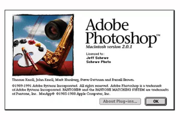
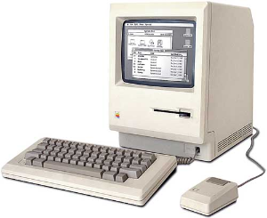
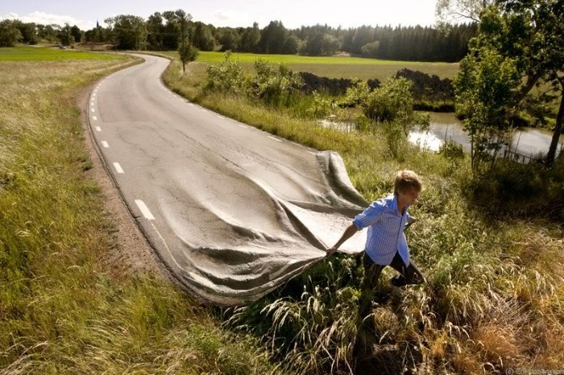
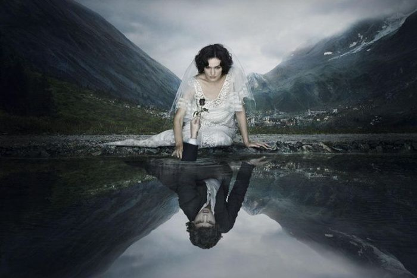

Adobe Photoshop
The first Adobe Photoshop (PS) was launched in 1988, but Thomas and John Knoll sold the license to distribute the program to Adobe Systems later on.

"Adobe Photoshop CC is a photo, image, and design editing software built for professional designers, photographers, and artists. The imaging and design app is a part of Adobe Creative Cloud service, and allows users to design websites, mobile apps, posters, banners, and icons through the aid of its easy-to-use templates and intuitive tools. It also provides professional photography tools which help create and enhance pictures, transforming them into amazing works of art.
In addition, Adobe Photoshop CC lets users create and enhance paintings, illustrations, and 3D artworks. The app offers unique patterns and effects, as well as advanced brushes that allow them to create and customize digital masterpieces. Adobe Photoshop CC features a variety of unique tool in this industry, among which brush management, brush smoke smoothing, Lightroom photo access, curvature pen tool, paint symmetry, color and luminance masking controls, group layer arranging, quick share menu, variable fonts, and more."
In 1990, the first version of 1.0.1 was released, of the older Photoshop versions. This was the older version up until 7.0. which served as a foundation of those tools by Photoshop today.

Photoshop is a very important tool for designers around the world. This program is capable of incredible things.
 